Contents
- Demonstration of controller synthesis via SReachPoint
- Problem formulation: Spacecraft motion via CWH dynamics
- Dynamics model for the deputy relative to the chief spacecraft
- System definition
- Methods to run
- Target tube construction --- reach-avoid specification
- Initial state definition
- Preparation for Monte-Carlo simulations of the optimal controllers
- CC (Linear program approach)
- CC with affine controllers (Second order cone program approach)
- Particle filter approach
- Plotting and Monte-Carlo simulation-based validation
- Reporting the results
- Helper functions
Demonstration of controller synthesis via SReachPoint
This example will demonstrate the use of SReachTools in controller synthesis for stochastic continuous-state discrete-time linear time-invariant (LTI) systems.
Specifically, we will discuss how SReachTools can use Fourier transforms (Genz's algorithm and MATLAB's patternsearch), particle filter, or convex chance constraints to synthesize open-loop controllers. We also synthesize an affine controller using difference-of-convex program.
Our approaches is grid-free and recursion-free resulting in highly scalable solutions, especially for Gaussian-perturbed LTI systems.
This Live Script is part of the SReachTools toolbox. License for the use of this function is given in https://github.com/unm-hscl/SReachTools/blob/master/LICENSE.
% Prescript running close all;clc;clear; srtinit
Problem formulation: Spacecraft motion via CWH dynamics
We consider both the spacecrafts, referred to as the deputy spacecraft and the chief spacecraft, to be in the same circular orbit. In this example, we will consider the problem of optimal controller synthesis for the deputy such that it can rendezvous with the chief while staying within the line-of-sight cone with maximium likelihood.

Dynamics model for the deputy relative to the chief spacecraft
The relative planar dynamics of the deputy with respect to the chief are described by the Clohessy-Wiltshire-Hill (CWH) equations,
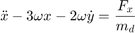
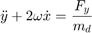
where the position of the deputy relative to the chief is 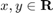, 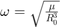 is the orbital frequency, 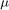 is the gravitational constant, and 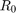 is the orbital radius of the chief spacecraft. We define the state as 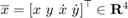 which is the position and velocity of the deputy relative to the chief along 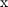- and 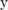- axes, and the input as 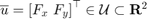.
We will discretize the CWH dynamics in time, via zero-order hold, to obtain the discrete-time linear time-invariant system and add a Gaussian disturbance to account for the modeling uncertainties and the disturbance forces,
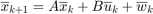
with  as an IID Gaussian zero-mean random process with a known covariance matrix 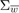.
as an IID Gaussian zero-mean random process with a known covariance matrix 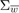.
System definition
umax=0.1; mean_disturbance = zeros(4,1); covariance_disturbance = diag([1e-4, 1e-4, 5e-8, 5e-8]); % Define the CWH (planar) dynamics of the deputy spacecraft relative to the % chief spacecraft as a LtiSystem object sys = getCwhLtiSystem(4, Polyhedron('lb', -umax*ones(2,1),... 'ub', umax*ones(2,1)),... RandomVector('Gaussian', mean_disturbance,covariance_disturbance));
Methods to run
ft_run = 1; cc_open_run = 1; cc_affine_run = 1; pa_open_run = 1; plot_traj_instead_of_ellipses = 0;
Target tube construction --- reach-avoid specification
time_horizon=5; % Stay within a line of sight cone for 4 time steps and % reach the target at t=5% Safe Set --- LoS cone % Safe set definition --- LoS cone |x|<=y and y\in[0,ymax] and |vx|<=vxmax and % |vy|<=vymax ymax=2; vxmax=0.5; vymax=0.5; A_safe_set = [1, 1, 0, 0; -1, 1, 0, 0; 0, -1, 0, 0; 0, 0, 1,0; 0, 0,-1,0; 0, 0, 0,1; 0, 0, 0,-1]; b_safe_set = [0; 0; ymax; vxmax; vxmax; vymax; vymax]; safe_set = Polyhedron(A_safe_set, b_safe_set); % Target set --- Box [-0.1,0.1]x[-0.1,0]x[-0.01,0.01]x[-0.01,0.01] target_set = Polyhedron('lb', [-0.1; -0.1; -0.01; -0.01],... 'ub', [0.1; 0; 0.01; 0.01]); target_tube = Tube('reach-avoid',safe_set, target_set, time_horizon);
Initial state definition
initial_state = [-1.15; % Initial x relative position -1.15; % Initial y relative position 0; % Initial x relative velocity 0]; % Initial y relative velocity slice_at_vx_vy = initial_state(3:4);
Preparation for Monte-Carlo simulations of the optimal controllers
Monte-Carlo simulation parameters
n_mcarlo_sims = 1e5; n_sims_to_plot = 5; % Required only if plot_traj_instead_of_ellipses = 1 % Generate matrices for optimal mean trajectory generation % Get H and mean_X_sans_input [~, H, ~] = getConcatMats(sys, time_horizon); sysnoi = LtvSystem('StateMatrix',sys.state_mat,'DisturbanceMatrix',... sys.dist_mat,'Disturbance',sys.dist); [mean_X_sans_input, ~] = SReachFwd('concat-stoch', sysnoi, initial_state,... time_horizon); if ft_run timer_ft = tic; [lb_stoch_reach_avoid_ft, optimal_input_vector_ft] = SReachPoint(... 'term','genzps-open', sys, initial_state, target_tube); elapsed_time_ft = toc(timer_ft); if lb_stoch_reach_avoid_ft > 0 % This function returns the concatenated state vector stacked columnwise concat_state_realization_ft = generateMonteCarloSims(n_mcarlo_sims,... sys, initial_state, time_horizon, optimal_input_vector_ft); % Check if the location is within the target_set or not mcarlo_result_ft = target_tube.contains(... [repmat(initial_state,1,n_mcarlo_sims); concat_state_realization_ft]); % Optimal mean trajectory generation optimal_mean_X_ft = mean_X_sans_input + H * optimal_input_vector_ft; optimal_mean_trajectory_ft=reshape(optimal_mean_X_ft,sys.state_dim,[]); end end
CC (Linear program approach)
We will use the default options
if cc_open_run timer_cc_pwl = tic; [lb_stoch_reach_avoid_cc_pwl, optimal_input_vector_cc_pwl] = SReachPoint(... 'term','chance-open', sys, initial_state, target_tube); elapsed_time_cc_pwl = toc(timer_cc_pwl); if lb_stoch_reach_avoid_cc_pwl > 0 % This function returns the concatenated state vector stacked columnwise concat_state_realization_cc_pwl = generateMonteCarloSims(... n_mcarlo_sims, sys, initial_state, time_horizon,... optimal_input_vector_cc_pwl); % Check if the location is within the target_set or not mcarlo_result_cc_pwl = target_tube.contains(... [repmat(initial_state,1,n_mcarlo_sims); concat_state_realization_cc_pwl]); % Optimal mean trajectory generation optimal_mean_X_cc_pwl = mean_X_sans_input +... H * optimal_input_vector_cc_pwl; optimal_mean_trajectory_cc_pwl=reshape(optimal_mean_X_cc_pwl,... sys.state_dim,[]); end end
CC with affine controllers (Second order cone program approach)
We set 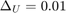 and define verbosity level of 1.
max_input_viol_prob = 0.01; if cc_affine_run timer_cc_affine = tic; options = SReachPointOptions('term','chance-affine',... 'max_input_viol_prob', 1e-2, 'verbose', 1); [lb_stoch_reach_avoid_cc_affine, optimal_input_vector_cc_affine,... optimal_input_gain, risk_alloc_state, risk_alloc_input] =... SReachPoint('term','chance-affine', sys, initial_state, target_tube,... options); elapsed_time_cc_affine = toc(timer_cc_affine); if lb_stoch_reach_avoid_cc_affine > 0 % This function returns the concatenated state vector stacked columnwise [concat_state_realization_cc_affine,... concat_disturb_realization_cc_affine] =... generateMonteCarloSims(n_mcarlo_sims, sys, initial_state,... time_horizon,optimal_input_vector_cc_affine,... optimal_input_gain); % Check if the location is within the target_set or not mcarlo_result_cc_affine = target_tube.contains(... [repmat(initial_state,1,n_mcarlo_sims); concat_state_realization_cc_affine]); % Check if the input is within the tolerance [concat_input_space_A, concat_input_space_b] =... sys.getConcatInputSpace(time_horizon); mcarlo_result_cc_affine_input = any(concat_input_space_A *... (optimal_input_gain * concat_disturb_realization_cc_affine +... optimal_input_vector_cc_affine)<=concat_input_space_b); % Optimal mean trajectory generation optimal_mean_X_cc_affine = mean_X_sans_input +... H * optimal_input_vector_cc_affine; optimal_mean_trajectory_cc_affine=reshape(... optimal_mean_X_cc_affine,sys.state_dim,[]); end end
Particle filter approach
if pa_open_run timer_pa = tic; [lb_stoch_reach_avoid_pa, optimal_input_vector_pa] = SReachPoint(... 'term','particle-open', sys, initial_state, target_tube); elapsed_time_pa = toc(timer_pa); if lb_stoch_reach_avoid_pa > 0 % This function returns the concatenated state vector stacked columnwise concat_state_realization_pa = generateMonteCarloSims(... n_mcarlo_sims, sys, initial_state, time_horizon,... optimal_input_vector_pa); % Check if the location is within the target_set or not mcarlo_result_pa = target_tube.contains(... [repmat(initial_state,1,n_mcarlo_sims); concat_state_realization_pa]); % Optimal mean trajectory generation optimal_mean_X_pa = mean_X_sans_input +... H * optimal_input_vector_pa; optimal_mean_trajectory_pa=reshape(optimal_mean_X_pa,... sys.state_dim,[]); end end
Plotting and Monte-Carlo simulation-based validation
figure(1); clf box on; hold on; plot(safe_set.slice([3,4], slice_at_vx_vy), 'color', 'y'); plot(target_set.slice([3,4], slice_at_vx_vy), 'color', 'g'); scatter(initial_state(1),initial_state(2),200,'k^'); legend_cell = {'Safe set','Target set','Initial state'}; if exist('optimal_mean_trajectory_ft','var') scatter([initial_state(1), optimal_mean_trajectory_ft(1,:)],... [initial_state(2), optimal_mean_trajectory_ft(2,:)],... 30, 'ro', 'filled'); legend_cell{end+1} = 'Optimal mean trajectory (genzps-open)'; end if exist('optimal_mean_trajectory_cc_pwl','var') scatter([initial_state(1), optimal_mean_trajectory_cc_pwl(1,:)],... [initial_state(2), optimal_mean_trajectory_cc_pwl(2,:)],... 30, 'mo', 'filled'); legend_cell{end+1} = 'Optimal mean trajectory (chance-open)'; end if exist('optimal_mean_trajectory_pa','var') scatter([initial_state(1), optimal_mean_trajectory_pa(1,:)],... [initial_state(2), optimal_mean_trajectory_pa(2,:)],... 30, 'ko', 'filled'); legend_cell{end+1} = 'Optimal mean trajectory (particle-open)'; end if exist('optimal_mean_trajectory_cc_affine','var') scatter([initial_state(1), optimal_mean_trajectory_cc_affine(1,:)],... [initial_state(2), optimal_mean_trajectory_cc_affine(2,:)],... 30, 'bo', 'filled'); legend_cell{end+1} = 'Optimal mean trajectory (chance-affine)'; end legend(legend_cell, 'Location','South'); xlabel('$x$','interpreter','latex'); ylabel('$y$','interpreter','latex'); figure(2); clf box on; hold on; plot(safe_set.slice([3,4], slice_at_vx_vy), 'color', 'y'); plot(target_set.slice([3,4], slice_at_vx_vy), 'color', 'g'); scatter(initial_state(1),initial_state(2),200,'k^'); legend_cell = {'Safe set','Target set','Initial state'}; if exist('optimal_mean_trajectory_ft','var') scatter([initial_state(1), optimal_mean_trajectory_ft(1,:)],... [initial_state(2), optimal_mean_trajectory_ft(2,:)],... 30, 'ro', 'filled'); legend_cell{end+1} = 'Optimal mean trajectory (genzps-open)'; if ~isnan(concat_state_realization_ft) if plot_traj_instead_of_ellipses == 1 [legend_cell] = plotMonteCarlo('(genzps-open)', mcarlo_result_ft,... concat_state_realization_ft, n_mcarlo_sims, n_sims_to_plot,... sys.state_dim, initial_state, legend_cell); else ellipsoidsFromMonteCarloSims(concat_state_realization_ft,... sys.state_dim, [1,2], {'r'}); end end else lb_stoch_reach_avoid_ft = NaN; mcarlo_result_ft = NaN; elapsed_time_ft = NaN; end if exist('optimal_mean_trajectory_cc_pwl','var') scatter([initial_state(1), optimal_mean_trajectory_cc_pwl(1,:)],... [initial_state(2), optimal_mean_trajectory_cc_pwl(2,:)],... 30, 'mo', 'filled'); legend_cell{end+1} = 'Optimal mean trajectory (chance-open)'; if ~isnan(concat_state_realization_cc_pwl) if plot_traj_instead_of_ellipses == 1 [legend_cell] = plotMonteCarlo('(chance-open)', ... mcarlo_result_cc_pwl, concat_state_realization_cc_pwl,... n_mcarlo_sims, n_sims_to_plot, sys.state_dim, initial_state,... legend_cell); else ellipsoidsFromMonteCarloSims(concat_state_realization_cc_pwl,... sys.state_dim, [1,2], {'m'}); end end else lb_stoch_reach_avoid_cc_pwl = NaN; mcarlo_result_cc_pwl = NaN; elapsed_time_cc_pwl = NaN; end if exist('optimal_mean_trajectory_pa','var') scatter([initial_state(1), optimal_mean_trajectory_pa(1,:)],... [initial_state(2), optimal_mean_trajectory_pa(2,:)],... 30, 'ko', 'filled'); legend_cell{end+1} = 'Optimal mean trajectory (particle-open)'; if ~isnan(concat_state_realization_pa) if plot_traj_instead_of_ellipses == 1 [legend_cell] = plotMonteCarlo('(particle-open)', ... mcarlo_result_pa, concat_state_realization_pa,... n_mcarlo_sims, n_sims_to_plot, sys.state_dim, initial_state,... legend_cell); else ellipsoidsFromMonteCarloSims(concat_state_realization_pa,... sys.state_dim, [1,2], {'k'}); end end else lb_stoch_reach_avoid_pa = NaN; mcarlo_result_pa = NaN; elapsed_time_pa = NaN; end if exist('optimal_mean_trajectory_cc_affine','var') scatter([initial_state(1), optimal_mean_trajectory_cc_affine(1,:)],... [initial_state(2), optimal_mean_trajectory_cc_affine(2,:)],... 30, 'bd', 'filled'); legend_cell{end+1} = 'Optimal mean trajectory (chance-affine)'; if ~isnan(concat_state_realization_cc_affine) if plot_traj_instead_of_ellipses==1 [legend_cell] = plotMonteCarlo('(chance-affine)',... mcarlo_result_cc_affine,... concat_state_realization_cc_affine, n_mcarlo_sims,... n_sims_to_plot, sys.state_dim, initial_state, legend_cell); else ellipsoidsFromMonteCarloSims(concat_state_realization_cc_affine,... sys.state_dim, [1,2], {'b'}); end end else lb_stoch_reach_avoid_cc_affine = NaN; mcarlo_result_cc_affine = NaN; elapsed_time_cc_affine = NaN; end legend(legend_cell, 'Location','South'); if plot_traj_instead_of_ellipses==1 title(sprintf('Plot with %d Monte-Carlo sims', n_sims_to_plot)); else title('Plot with ellipsoid fit for 100 randomly chosen Monte-Carlo sims'); end box on; grid on; xlabel('$x$','interpreter','latex'); ylabel('$y$','interpreter','latex');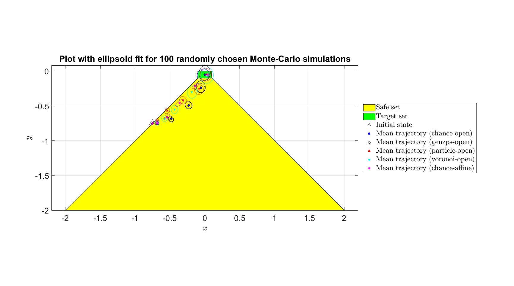 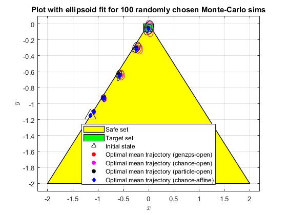
Reporting the results
if any(isnan([lb_stoch_reach_avoid_cc_pwl, lb_stoch_reach_avoid_ft,... lb_stoch_reach_avoid_cc_affine, lb_stoch_reach_avoid_pa])) disp('Skipped items would show up as NaN'); end fprintf(['FT: %1.3f | CC (Open): %1.3f | Scenario (Open): %1.3f | ',... 'CC (Affine): %1.3f\n'],... lb_stoch_reach_avoid_ft,... lb_stoch_reach_avoid_cc_pwl,... lb_stoch_reach_avoid_pa,... lb_stoch_reach_avoid_cc_affine); fprintf('MC (%1.0e particles): %1.3f, %1.3f, %1.3f, %1.3f\n',... n_mcarlo_sims,... sum(mcarlo_result_ft)/n_mcarlo_sims, ... sum(mcarlo_result_cc_pwl)/n_mcarlo_sims,... sum(mcarlo_result_pa)/n_mcarlo_sims,... sum(mcarlo_result_cc_affine)/n_mcarlo_sims); fprintf('Elapsed time: %1.3f, %1.3f, %1.3f, %1.3f seconds\n',... elapsed_time_ft, elapsed_time_cc_pwl, elapsed_time_pa,... elapsed_time_cc_affine);
FT: 0.728 | CC (Open): 0.670 | Scenario (Open): 0.770 | CC (Affine): 0.813 MC (1e+05 particles): 0.728, 0.707, 0.643, 0.831 Elapsed time: 56.978, 0.278, 6.265, 71.380 seconds
Helper functions
Plotting function
function [legend_cell] = plotMonteCarlo(method_str, mcarlo_result,... concat_state_realization, n_mcarlo_sims, n_sims_to_plot, state_dim,... initial_state, legend_cell) % Plots a selection of Monte-Carlo simulations on top of the plot green_legend_updated = 0; red_legend_updated = 0; traj_indices = floor(n_mcarlo_sims*rand(1,n_sims_to_plot)); for realization_index = traj_indices % Check if the trajectory satisfies the reach-avoid objective if mcarlo_result(realization_index) % Assign green triangle as the marker markerString = 'g^-'; else % Assign red asterisk as the marker markerString = 'r*-'; end % Create [x(t_1) x(t_2)... x(t_N)] reshaped_X_vector = reshape(... concat_state_realization(:,realization_index), state_dim,[]); % This realization is to be plotted h = plot([initial_state(1), reshaped_X_vector(1,:)], ... [initial_state(2), reshaped_X_vector(2,:)], ... markerString, 'MarkerSize',10); % Update the legends if the first else, disable if strcmp(markerString,'g^-') if green_legend_updated h.Annotation.LegendInformation.IconDisplayStyle = 'off'; else green_legend_updated = 1; legend_cell{end+1} = strcat('Good trajectory ', method_str); end elseif strcmp(markerString,'r*-') if red_legend_updated h.Annotation.LegendInformation.IconDisplayStyle = 'off'; else red_legend_updated = 1; legend_cell{end+1} = strcat('Bad trajectory ', method_str); end end end end